Задача- Пеещите плодове¶
Тон представлява равна вибрация (движение) на звуков източник.
Тонът е звук, който има специфични:
Височина, определена от скоростта и броя вибрации за секунда. Колкото по-висок е броят на вибрациите, токлкова по-висока е височината-и обратно. Човешкото ухо може да улавя звук от 16 до 20 000вибрации в секунда.
Интензитет-зависи от амплитуцата на звуковия източник. Колкото по-голяма е амплитудата, толкова по-силен е звукът. Височината също оказва влияние върху интензитета. По-дълбоките тонове са сравнително по-неотчетливи от по-високите.
Продължителност-зависи от това колко дълго звуковият източник вибрира. Щом притихне, звукът спира.
Цвят-зависи от типа материал, формата и размера на вибриращия звуков източник.
Ще направим музикален инструмент, използвайки Micro:bit устройството, и чрез него ще изсвирим тоновете от музикалната стълбица.
Тя представя поредица от осем последователни ноти (седем тона с различни имена, а осмата-повторение на първата), обособени в октави. Тоновете в стълбицата могат да бъдат прочетени според азбуката или според наименованието им в солфежа. Азбучно това са: c, d, e, f, g, a и h (b в някои държави); а солфежът ги нарича: do (или ut), re, mi, fa, sol (или so), la, si (или ti), do. използваме Micro:bit-а, за да произведем октавите C, D, E, F, G, A, H (B).
За да направим нашето пиано, ще ни трябват:
4 Micro:bitа
слушалки
крокодилчета
плодове (8)
алуминиево фолио
За да направим пианото (пеещите плодове), първо ще подготвим физическото устройство, състоящо се от различни плодове, на които ще свирим, и Micro:bit-ове.
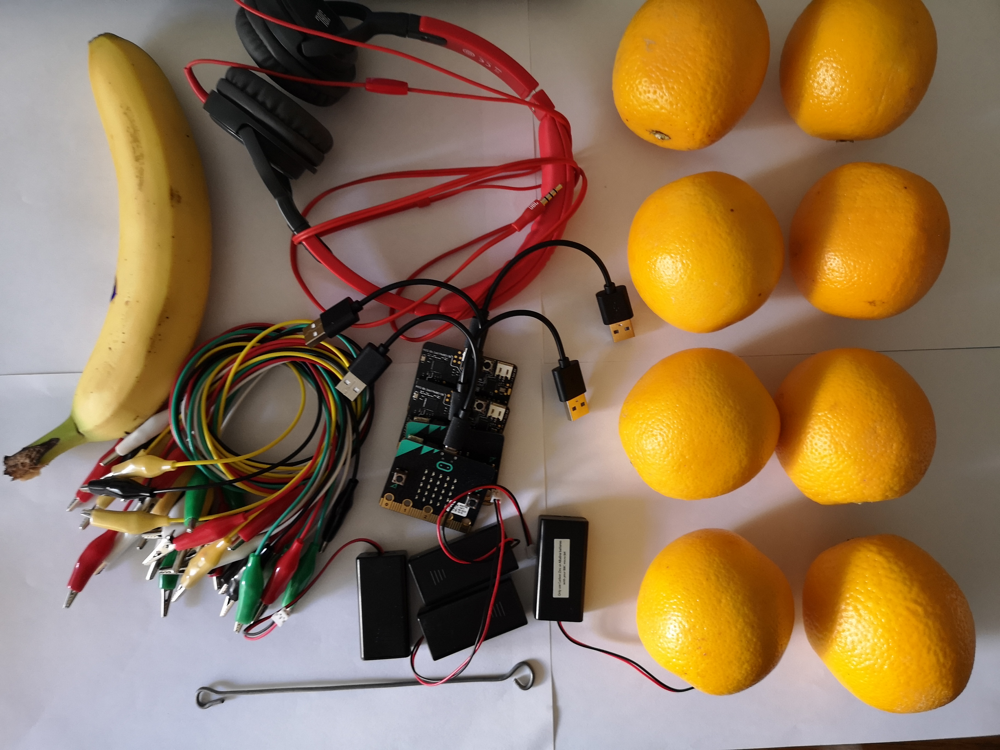{kind=link}
Свързването на Micro:bit-ове с плодове (от по-сочния вид) и слушалки:
Стъпка 1: Можем да свържем първия Micro:bit като заземим (GND) слушалките с пина (GND), използвайки крокодилските щипки. Фигурата отдолу представя връзката между заземяването и Micro:bit-а (само за едно устройство). GND е заземяването, което защитава Micro:bit-а от електрически шок. Ще го свържем с жица, което ще служи като заземяване. Ще трябва да свържем Micro:bit-а със слушалките чрез PIN0. Ще свържем крокодилските щипки с PIN0-то и портът на слушалките (отгоре му). Много е важно да сме сигурни, че щипките не докосват порта на слушалките.

Стъпка 2: За втория Micro:bit ще свържем крокодилските щипки към GND и жицата и тогава ще го свържем и с банана (края на щипката ще влезне в него). Свържете Micro:bit-а към три портокала чрез PIN0, PIN1 и PIN2 и крокодилски щипки.
Стъпка 3: За третия Micro:bit ще свържем крокодилските щипки с GND и жицата. Самият Micro:bit ще свържем също с портокали посредством щипки, свързани с PIN0, PIN1 и PIN2.
Стъпка 4: За четвъртия Micro:bit ще свържем крокодилска щипка с GND и жицата. Самият Micro:bit ще свържем също с портокали посредством щипки, свързани с PIN0, PIN1 и PIN2.
След като конструирахме физическото пиано, трябва да създадем програми за всеки Micro:bit.
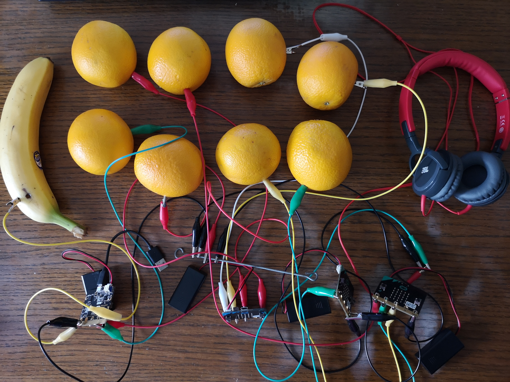{kind=link}
Програмиране
Трябва да програмираме всеки Micro:bit поотделно, така че да комуникират и да произвеждат звуци.
Стъпка 1
Отидете на https://makecode.microbit.org/.
Стъпка 2
Създайте нов проект. Искаме Micro:bit-овете да изпращат информация-съответните числа (за съответните тонове), щом специфичен PIN е натиснат. В допълнение, трябва да програмираме Micro:bit-овете да комуникират един с друг. По този начин, в зависимост от числото (тона), Micro:bit-овете произвеждат, или по-точно-изпращат, а друг Micro:bit получава това число и слушалките възпроизвеждат този тон.
Стъпка 3
Когато искаме да установим комуникация (за да използваме радио комуникация) между Micro:bit-ове, всички включени Micro:bit-ове трябва да принадлежат към една група, трябва да използват едно и също групово ID. Създавайки груповото ID, ние всъщност създаваме пространството, в което устройствата ще комуникират.
За да създадем ID група, трябва да влачим блока 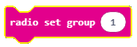 от категория  в блока 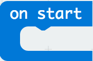 от категория
в блока 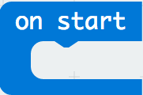 от категория  . В полето ще въведем желаното число за ID групата. Това може да е всяко число. Ние ще оставим числото 1. Така ще сме създали група с ID 1, в която всички Micro:bit-и ще общуват.
. В полето ще въведем желаното число за ID групата. Това може да е всяко число. Ние ще оставим числото 1. Така ще сме създали група с ID 1, в която всички Micro:bit-и ще общуват.
Частта от кода, която създава групата за комуникация:
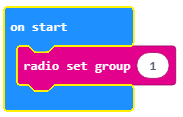Стъпка 4
Трябва да добавим блока 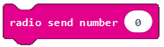 към частта от кода, която е проектирана да отчете събитие (докосване на плода), за да изпрати радио сигнал на друго устройство, което , от своя страна, ще “реагира”, т.е при докосване (натискане) на плода, ние ще чуем тон.
Събитието ще бъде отчетено, когато един от пиновете на Micro:bit-а бъде натиснат. За да осъществим това, трябва да въведем блока 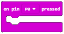 от категорията  . От падащото меню на блока ще изберем пина (P0, P1, P2), който задейства събитието, изпращайки числото (тона), който ще бъде представен.
. От падащото меню на блока ще изберем пина (P0, P1, P2), който задейства събитието, изпращайки числото (тона), който ще бъде представен.
Трябва да изясним начина, по който ще представим (съхраним) стойностите на желаните тонове (Middle С или 262, Middle D или 294, Middle E или 330, Middle F или 349, Middle A или 440, Middle H или 494). Отделно, ще трябва и да определим стойностите на всяка от споменатите ноти. Можем да решим този проблем, въвеждайки променлива.
Променливата може да бъде разбрана като пространство в компютърната памет, нещо като кутия, в което съхраняваме временни стойности по време на изпълнението на програмата. Променливите имат имена. Когато искаме да използваме стойността на променливата, достатъчно е да употребим нейното име.
Променлива се създава по следния начин: в категорията Variables (1) натискаме бутон Make a variable (2) и вписваме името на тази променлива в полето (3), в нашия случай-името на тона. Натискайки бутона ОК (4), създаваме променлива (5).

Стойността на променливата Tone ще се променя от 1 до 8.
В случай, че пинът P1 бъде натиснат, ще настроим началната стойност на 1 за променливата Tone, използвайки блока 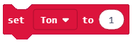.
Ще използваме радио сигнал към Micro:bit–а, използвайки блока , после ще завлечем променливата Tone, която искаме да изпратим, в частта 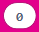, т.е. ще създадем блока  .
.
Блокът изглежда така:
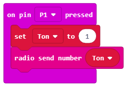Същата процедура трябва да се извърши и за пина P2. ние ще настроим началната стойност на променливата Tone на 2, ако пина P2 бъде натиснат.
Кодът за клавишите на пианото (C, D):

Крайният вид на програмата, която изпраща информация за това кой пин е натиснат (P1 или P2):
Следващата стъпка е Micro:bit–ът да получи информацията (в нашия случай-числото), на основа на което ще реагира и ще произведе звук.
За това ще влачим блока  от категория
от категория Radio. В зависимост от полученото число (1 или 2), този Micro:bit ще възпроизведе желания тон.
За това ще използваме блока  от категория
от категория  .
.
Into the condition input field we will drag the block, which is used to check whether pin P1 was pressed or not:
Ако пинът P1 е натиснат, тонът C ще бъде чут. Ще постигнем възпроизводството на тона, влачейки блока  от категория
от категория  , която се използва за възпроизводство на звук. В падащото меню на този блок ще изберем тона и продължителността на звука:
, която се използва за възпроизводство на звук. В падащото меню на този блок ще изберем тона и продължителността на звука:

Блокът изглежда така:
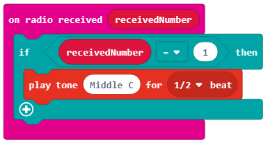Ще добавим още едно условие (пин P2 е бил натиснат) към блока натискайки  . Ако пин
. Ако пин P2 е бил натиснат, тонът D ще бъде възпроизведен.
Блокът изглежда така:

Забележка: Micro:bit-ът трябва да бъде свързан с тонколоните или слушалките, както е показано на фигурата отдолу, за да може звукът да бъде възпроизведен.

Програмата за тоновете C and D в крайния и вид:
Свалете файлът .hex на компютъра си, натискайки бутона  или
или  . Micro:bit-ът ще бъде готов да започне работа, щом завлачим файла в него.
. Micro:bit-ът ще бъде готов да започне работа, щом завлачим файла в него.
Ще държим банана в една ръка и ще използваме другата за друг плод.
Можем да програмираме остналите два Micro:bit-а по същия начи за тоновете Middle E или 330, F или 349, Middle G или 392, Middle A или 440, Middle H (B) или 494.
Крайният код за Micro:bit, използван да изпрати информацията за това кой пин е бил натиснат, предопределящ кой тон (E, F и G) ще бъде изсвирен:
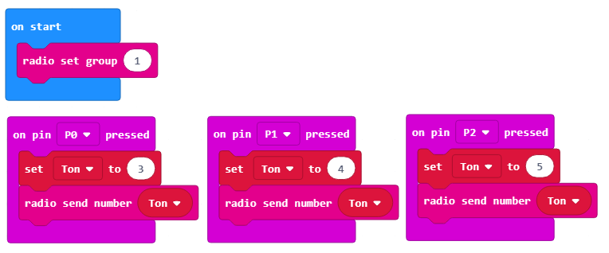Крайният код за Micro:bit, използван да изпрати информацията за това кой пин е бил натиснат, предопределящ кой тон (A, H (B) и C ) ще бъде изсвирен:

След всичко това, ще трябва да обновите кода за Micro:bit-а, използван като звуков „говорител“:

След като сме свързали всички плодове и сме свалили всички кодове, можем да изсвирим някоя приятна песен на своето плодово пиано.